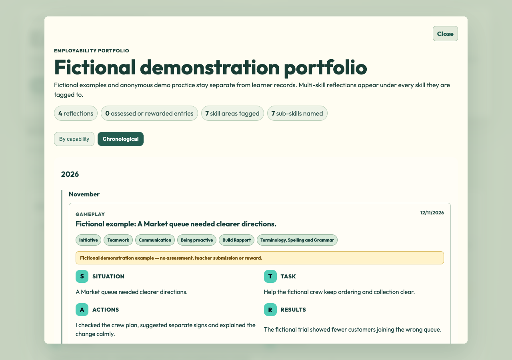
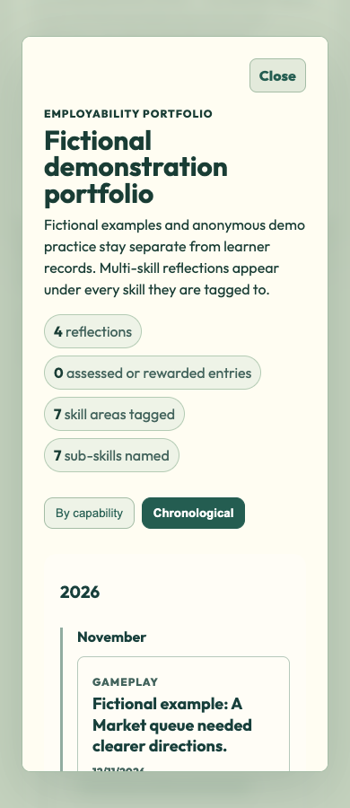

Opened Portfolio palette verified live
Game Portfolio palette correction167 is published and independently verified at the actual Career Empire game, commit 37758691a7fc9f543a9c3f1555c19edd29bd1d9f. All419actual public runtime hashes match. Native Chrome1280/390 directly opens View Portfolio and verifies cream dialog rgb(255,253,242), no navy background image and sage backdrop rgba(193,207,187,0.88), with matching readable heading, statistics, Close and global view controls. Initiative-first illustrated overviews, global capability dropdowns/multi-tag repetition and unique year/month chronology remain. Public Market entry/context/draft/log/PDF and actual Market/map/Notes/Journal/Archon/same-run checks pass. No JavaScript or learner-record behavior changed.
417unit tests/92files and coverage pass;419index assets/109imports pass. Required broad CI source/unit/coverage passed but browser startup could not bind the occupied4273; no completed broad-browser/all-CI-green claim. Safari, physical-device/classroom, real authenticated saving and Tania acceptance remain separate. Separate CIf156c32 is restored staged only; Flyover and unrelated work remain untouched.
CEAWA six-file and SkillQuest two-file candidates are preserved and tested, not published. Automatic approval review rejected the CEAWA publication command before execution because explicit public-deployment approval was missing. No retry, workaround or SkillQuest publication was attempted. Prepared CEAWA scope: nested Old/New Delivery then four routes, separate Archon and Portfolio Entry/View tabs, current all-in-one entry images and direct Careers Centre Portfolio link, personal-project/not-ECC wording, and intact Avatar Studio moved under From campus to3D. SkillQuest keeps its seven original examples and eight marks with the proposed common structure and its own coastal theme.
Tania to check the actual live opened Portfolio and Market/map links. Retain separate Safari/physical-device/classroom acceptance. CEAWA and SkillQuest public deployment still require explicit approval; do not publish or retry them under the game approval.
Current opened Portfolio evidence# Complete cream and sage palette in opened View Portfolio —13November2026
## Corrected specification
Published dfe1657 has Initiative-first illustrated overview cards and a cream demo page, but the opened View Portfolio dialog/backdrop still inherits the old navy theme. This was missed by the prior page-only colour check.
The opened View Portfolio dialog, overlay, headings, summary pills, close control and global view controls now use the same cream, sage and forest palette as the overview. The capabilities section and signed-in capabilities anchor receive the matching surface. Entry context labels remain readable. No JavaScript, reflection data, logos, ordering, global grouping, entry form, gameplay, camera or media changes.
## Privacy and preservation
CSS-only presentation correction plus stylesheet/script cache tags and exact release-manifest hashes. All published JavaScript, authenticated ownership filtering, anonymous/demo initialisation, record/storage/review/reward functions and SkillQuest/CEAWA candidates remain untouched. No data field, collection, processing purpose, account/query, lifecycle, permissions, backend, provider or telemetry change. No real learner records inspected or global school-compliance claim.
## Qualification and release limits
Native isolated Chrome1280/390 directly opens View Portfolio and verifies dialog background rgb(255,253,242), no background image, and sage backdrop rgba(193,207,187,0.88). Actual opened-view screenshots inspected. The same run passes Initiative-first closed artwork, capability dropdowns, multi-tag repetition, unique year/month chronology, modal grouping, bounded evidence/left geometry, anonymous practice/reset and zero Storage/backend/page errors.417unit tests/92files and coverage pass.419staged assets/109imports pass. Required broad CI source/unit/coverage passed; its browser server failed to bind the occupied4273, so no completed broad-browser/all-CI-green claim. Safari, physical-device/classroom and Tania acceptance remain separate.
Unpublished five-file successor to 465faea. Publish this exact three-file167source review and obtain a genuine receipt, then normal guarded game-only publication. Independently verify actual live opened-dialog/background colours, overview/navigation/privacy and419runtime hashes. CEAWA six-file and SkillQuest two-file candidates remain tested but unpublished pending explicit public-deployment approval after the CEAWA command was rejected before execution. Do not retry or bypass that rejection; preserve Avatar Studio relocation and all unrelated work.
## Exact source versions
- dashboards/dashboard.css — 100644:158f0cdc741c892173428f34b31e9110a3f6cb20
- dashboards/student.html — 100644:e401b451711320c0ffc2bea7b138c6d77f99b39d
- playable-3d/release-manifest.json — 100644:15bef73f90fbfb502d7fa9c92b04e9c77f9e5eb8
 Exact qualified native candidate; publication and Tania acceptance remain separate.
Exact qualified native candidate; publication and Tania acceptance remain separate. Exact qualified native candidate; publication and Tania acceptance remain separate.
Exact qualified native candidate; publication and Tania acceptance remain separate.
Actual published3775869: cream dialog and sage backdrop; fictional examples only.
Actual published3775869: cream dialog and sage backdrop; fictional examples only.